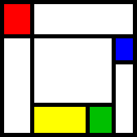

Appendix C. The wxGlade Icon

The wxGlade logo is a homage to Piet Mondrian a Dutch
painter.
The icon looks like a typical Mondrian painting. It has the
characteristic solid horizontal and vertical black lines as well as areas
filled with the three primary colours yellow, red and blue.